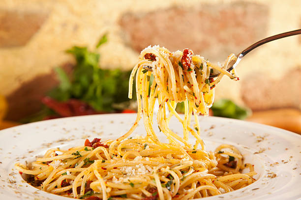

Aglio, Olio e Pepperoncino

Description
The best AOP recipe, inspired by french best cookers!
Delicious but cheap and easy to make
Ingredients
- Pasta
- Olive oil
- Pepperoncino
- garlic
- Parmigiano (optional)
- Salt
- Pepper
Steps
- Cook the pasta with a 1 liter of water and 10 grams of salt per 100 grams.
- While cooking the pasta, finely chop the garlic and the pepperoncino. Cook them in a pan with some olive oil
- Before the pasta is fully cooked, drain them and reserve. Keep some cooking water and add it to the pan.
- Add the pasta to the pan and let it rest a few minuts to finish cooking
- Add some pepper and maybe a little parmigiano, then enjoy!